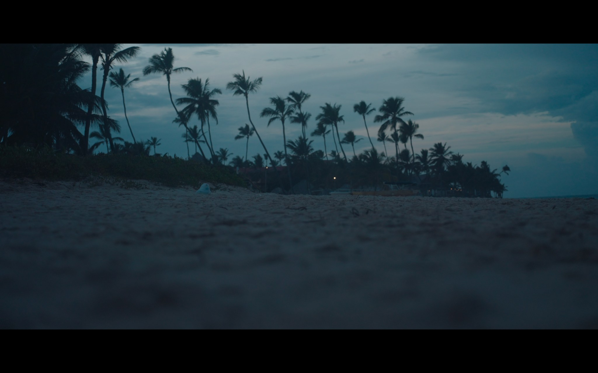

Skip to content
Ash
Jr
Films
Commercial
About

ASHJR / DIRECTOR
FEATURED PROJECT
DOCUMENTARY · IN POST-PRODUCTION
Drake’s
Fortune
Explore the film
↗
NARRATIVE / DOCUMENTARY / COMMERCIAL
Narrative &
Documentary
↗
Commercial
↗